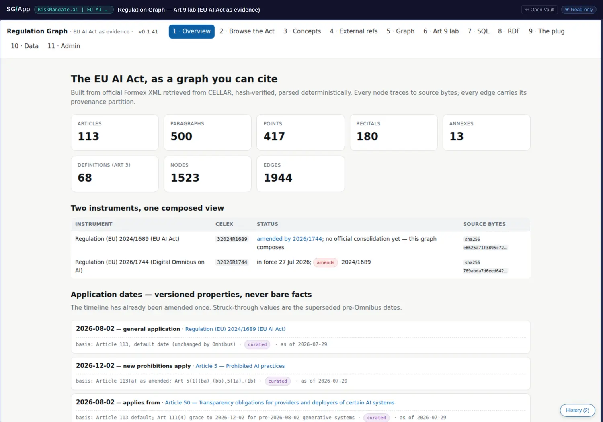
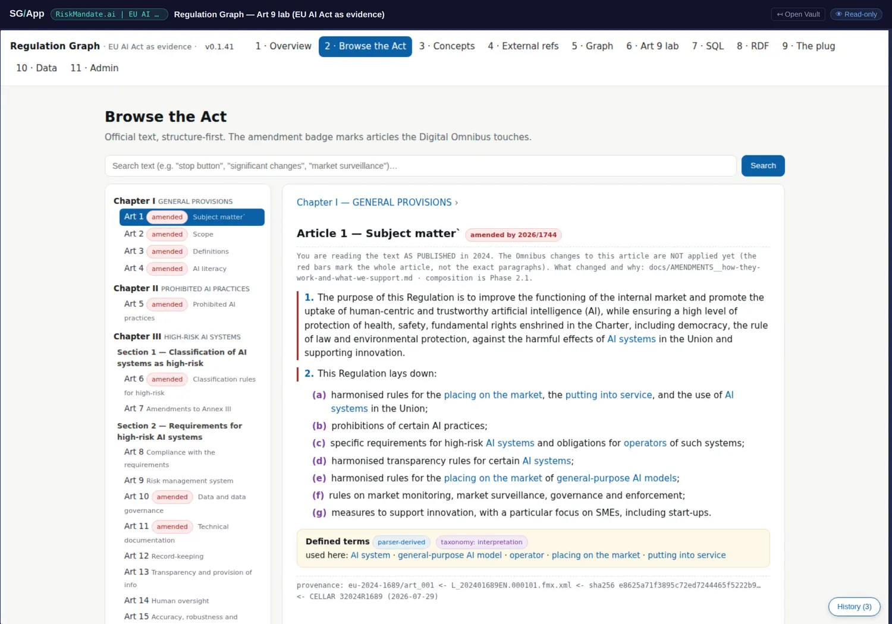
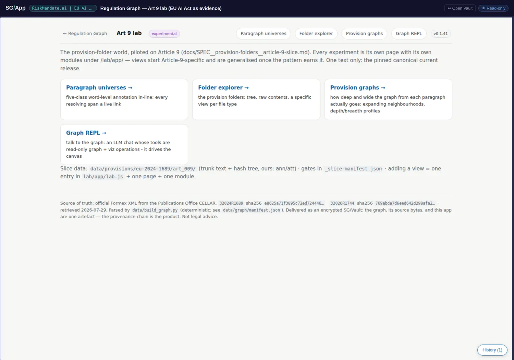

Regulation Graph, opened
The EU AI Act as a graph you can cite. Regulation (EU) 2024/1689 parsed from official Formex XML, hash-verified against the bytes it came from, and published as an evidence layer: in the vault's own words, "a risk in a register points at a named obligation in a real instrument instead of being asserted." This is the largest graph in the estate and the one this book already quotes most often — usually without saying what makes the numbers trustworthy, which is what these pages are for.
The vault's own counts, resolving from the structure above. Quoted here, not recounted.

The two deep readings
The provenance chain
Claim → graph node → vault file → commit → official source, with CELEX identifiers and the SHA-256 of retrieved bytes. Plus versioned properties, two instruments composed without consolidation, and the audit that stopped a publication.
The query engines
SQLite over sql.js in memory, rdflib with Turtle export, Cytoscape over the citation graph — all client-side, all ephemeral, the vault never written by the app. This is what settles the "we don't use databases" correction.
The instrument itself, structure first
The Act is navigable by its own structure, with a provenance footer on every node and search across the parsed text. This is the view that makes the rest defensible: when a risk cites Article 9(2)(a), you can go and read Article 9(2)(a) — in the text that was parsed, not a paraphrase of it. The distinction sounds pedantic until you have watched a compliance discussion run for an hour on somebody's summary of a provision.

The entry point is an experiment, deliberately
app.json sets entry to lab/index.html, so opening the vault lands in the Art 9 lab: paragraph universes, a web-component folder explorer, provision graphs with reach profiles, and a Graph REPL whose read-only tools drive the canvas. The lab is marked experimental and has no main navigation of its own; a back-link reaches the other ten views.
Landing a reader in the newest and least finished thing is an unusual choice, and an honest one. It is the same instinct as this site's comms board: showing the work in progress rather than only the parts that have settled.

Eight hard rules, two worth quoting
"Evidence, not compliance. Never a claim that an organisation passes or fails. Not legal advice."
"Provenance chain end to end: claim → graph node → vault file → commit → official source (CELEX/ELI plus SHA-256 of retrieved bytes)."
The first is a scope discipline this book should copy rather than admire: the vault refuses to be the thing everybody wants it to be. The second is the one this site keeps arriving at from other directions — it is the same instinct as the build gate that refuses a release when the book lags its source. A claim is worth what its chain of custody is worth.
What it does not do
- Only Article 9 is built out in depth. Rule 4 is "partial connection is sufficient — build only what the register cites", so the lab covers Article 9 and the rest of the Act is present as structure and citations rather than full annotation. That is a design decision, and it is the opposite of the completeness instinct most graph projects die of.
- The Graph REPL needs your own OpenRouter key. Nothing is supplied, deliberately. Without one the REPL pane is inert, which is the correct behaviour rather than a fault.
- No consolidated text exists. 2024/1689 is amended by 2026/1744 with no official consolidation yet; this graph composes the two and says so, rather than presenting a merged text as authoritative.
- External research is marked UNVERIFIED. The research report under
docs/research/carries external claims the vault has not itself checked, and labels them as such.
Open it yourself
sgit clone sgit_rk1_c004daae386e8d17fa648884acc527018bd4ea1116ad673fb2f1b068011695c9:73heuprzA one-way read key, derived from a vault key that is not published and never will be. The vault's own page carries the live embeds and the full audit note.
- Chapter 7 (worked graphs) can stop quoting 1,523 nodes and 1,944 edges as a bare number and start citing what makes it checkable: 113 articles, 500 paragraphs, 417 points, 180 recitals, 13 annexes and 68 definitions, parsed deterministically from official XML.
- Chapter 12 (what ships) gains the scope rule — evidence, not compliance — as an example of a project refusing the claim its market wants it to make.
- Chapter 10 (Article 26(5)) gains its evidence layer: the vault that can say what a cited article actually says and prove the bytes.
- The facts register proposed in review r002 gains its model: a provenance chain with five links, each of which can be walked by a reader who has only a read key.